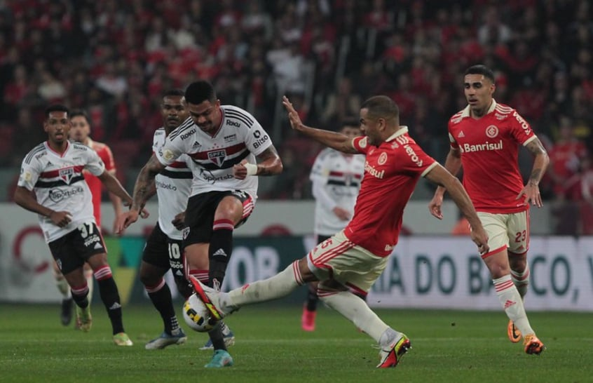

São Paulo FC anuncia novo técnico

O São Paulo FC anunciou oficialmente nesta Quinta-feira a contratação de Dorival Jr como novo técnico da
equipe. Após uma passagem pelo time do Flamengo, Dorival assume a posição deixada por Rogerio Ceni, que
foi demitido após uma sequência negativa de resultados.
São Paulo tem interesse no meia Pablo Roberto, do Remo
O São Paulo tem interesse na contratação do meia Pablo Roberto, que pertence ao Vila Nova e está
emprestado ao Remo. O Tricolor ainda não evoluiu para uma proposta formal, mas avalia o jogador para a
próxima janela de transferências.
São Paulo freguês do Internacional? Retrospecto histórico aponta pequena vantagem do SPFC

Mesmo que o Internacional colecione triunfos sobre o São Paulo no Século XXI, ainda assim o Tricolor
Paulista apresenta uma ligeira vantagem no retrospecto histórico entre as equipes. Desde o primeiro
encontro entre ambos em partidas oficiais, em 1967, já foram 78 jogos. Destes, o SPFC venceu 28, contra
26 do Internacional, além de 24 empates.